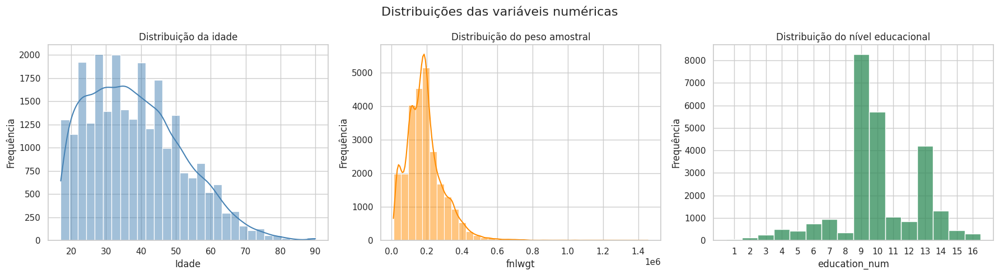
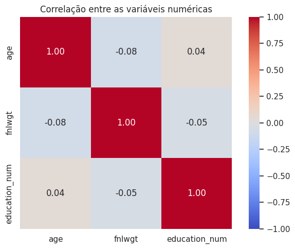
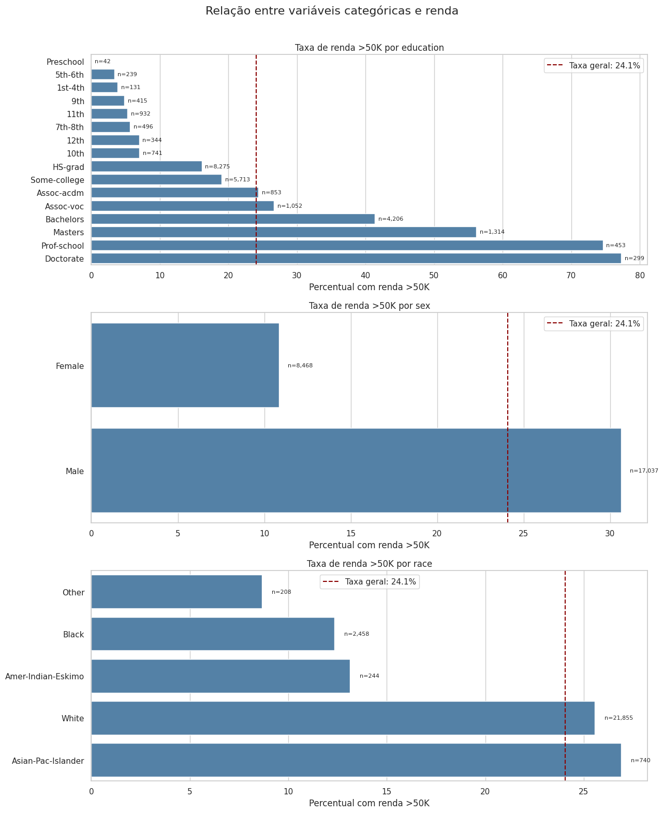
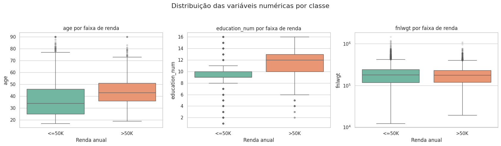
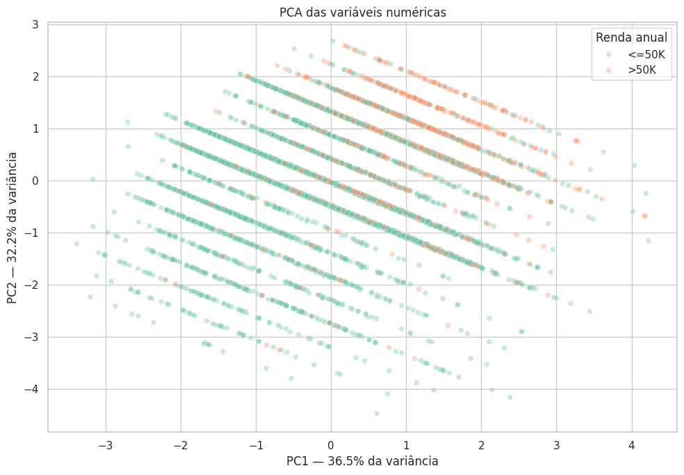

1
Entender
Inspecionar o significado, o tipo e a distribuição de cada variável.
Uma análise reproduzível da base Adult Income Census: qualidade dos dados, distribuições, relações com a renda, redução de dimensionalidade e preparação para modelagem.
Visão geral
A base reúne características demográficas, educacionais e profissionais. O target income identifica se a renda anual é de até ou acima de US$ 50 mil.
>50K após a limpezaInspecionar o significado, o tipo e a distribuição de cada variável.
Identificar inconsistências, ausências, duplicatas, outliers e possíveis vieses.
Transformar os dados com um pipeline reutilizável sem vazamento entre treino e teste.
| Variável | Tipo | Significado |
|---|---|---|
age | Numérica | Idade da pessoa. |
workclass | Categórica | Categoria de vínculo ou setor de trabalho. |
fnlwgt | Numérica | Peso amostral final; aproxima quantas pessoas da população o perfil representa. |
education | Categórica | Nível de escolaridade em texto. |
education_num | Numérica ordinal | Codificação ordenada do nível de escolaridade. |
marital_status | Categórica | Estado civil. |
occupation | Categórica | Grupo ocupacional. |
relationship | Categórica | Papel familiar informado. |
race | Categórica | Grupo racial registrado na base. |
sex | Categórica | Sexo registrado na base. |
native_country | Categórica | País de origem. |
income | Target | Faixa de renda anual: <=50K ou >50K. |
Fonte: Adult Income Census — Kaggle.
Qualidade dos dados
A ausência não aparecia como NaN: parte dos valores estava representada pelo caractere ?, além do texto inválido occupation dentro da própria coluna de ocupação.
Percentual sobre a base original
? e o placeholder inválido foram convertidos em valores ausentes.Missing, preservando informação potencial.Exploração univariada e bivariada
Os gráficos originais do notebook evidenciam a concentração das idades adultas, a natureza discreta da escolaridade e a forte assimetria à direita do peso amostral.

fnlwgt sustenta o uso de log1p; education_num aparece em níveis inteiros de 1 a 16.
Principais resultados
As comparações representam associações presentes nessa amostra. Elas não demonstram causalidade e não devem ser usadas para atribuir características intrínsecas aos grupos.
Base limpa, após remoção das duplicatas
Uma acurácia isolada pode ser enganosa: prever sempre a classe majoritária já produziria 75,93%.
Dados de treino
Categorias selecionadas · dados de treino
A mediana de idade é maior no grupo >50K, assim como a escolaridade numérica. As distribuições de fnlwgt são semelhantes entre as classes, indicando baixo poder de separação isolado.
No treino, a taxa observada foi 10,86% para mulheres e 30,63% para homens. Também surgiram diferenças entre grupos raciais, mas amostras menores geram estimativas mais instáveis. Esses resultados exigem leitura histórica e social, não causal.


>50K apresenta medianas maiores de idade e escolaridade. Já o peso amostral possui distribuições bastante semelhantes entre as classes.Redução de dimensionalidade
As três variáveis numéricas foram imputadas, transformadas quando necessário e padronizadas. O PCA então as resumiu em duas componentes para permitir a visualização bidimensional.
education_num responde por aproximadamente 74,1% de sua composição quadrática.
education_num é discreta.Pré-processamento
As escolhas foram conectadas aos achados da EDA e implementadas com Pipeline e ColumnTransformer do Scikit-learn.
| Desafio | Estratégia | Justificativa |
|---|---|---|
| Valores ausentes categóricos | Categoria constante Missing | Evita descartar aproximadamente 10% da base por causa de ocupação e preserva o sinal de ausência. |
| Outliers | Manutenção dos registros | Idades altas, escolaridades extremas e pesos amostrais elevados são plausíveis, não erros comprovados. |
Assimetria de fnlwgt | log1p | Reduz a influência da cauda direita antes da padronização. |
| Escalas numéricas | StandardScaler | Coloca idade, escolaridade e peso transformado em escalas comparáveis. |
| Categorias nominais | One-Hot Encoding | Não impõe uma ordem artificial e aceita categorias desconhecidas no teste. |
| Redundância educacional | Remover education do modelo | education e education_num possuem correspondência exata 1:1. |
Conclusões
A EDA mostrou que renda está associada a múltiplas dimensões e que nenhuma variável numérica isolada explica suficientemente o target.
fnlwgt tem função principalmente amostral.A base representa um contexto populacional e histórico específico; associações não são causais. Categorias com poucas observações têm maior incerteza, e a faixa de renda simplifica um fenômeno contínuo.
Comparar modelos com e sem PCA, testar o uso de fnlwgt como peso amostral, selecionar métricas adequadas ao desbalanceamento e realizar análise de equidade dos resultados.